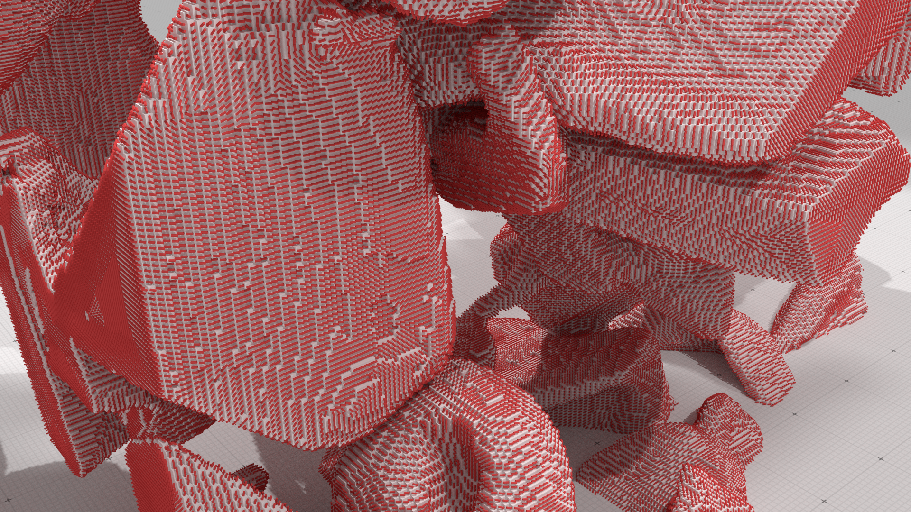
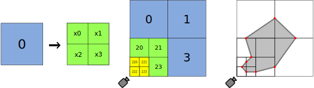
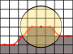
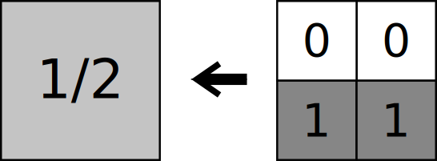
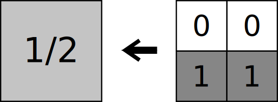
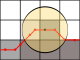
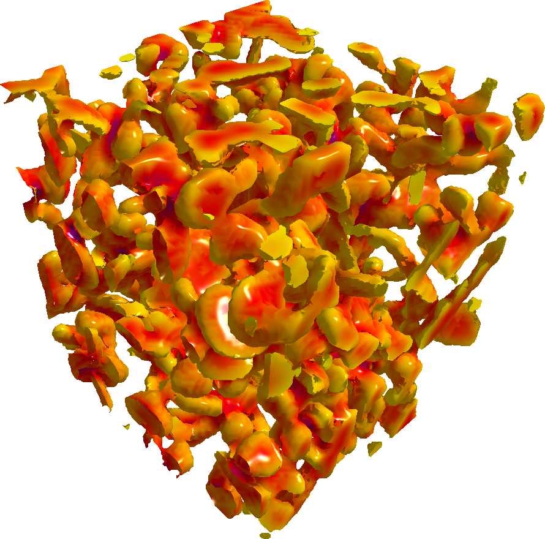
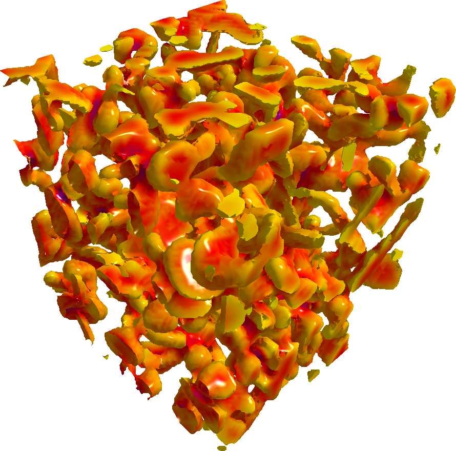

Interactive Curvature Tensor visualization
Helene Perrier
Jeremy Levallois
David Coeurjolly
Jean-Philippe Farrugia
Jean-Claude Iehl
Jacques-Olivier Lachaud

Analysing Digital Datasets

Output for most scanners
-
MRI
Microtomographic scanners
...
Complex objects
-
e.g. Snow Microstructures
Huge size
-
1024³
Difficult to analyze
Analysing Digital Datasets
Curvature Tensors
Used in material sciences, physics ...

Digital Curvature
There is a wide number of curvature estimators for digital objects
But a vast majority of them perform local computations, and rely on parameters acting as a SNR...


Issues
Computing the curvature is a long process due to the huge size of the datasets
Choosing the correct parameterization for an estimation is sometimes difficult
Our contribution, an interactive exploration of parameters

Pipeline
Interactive vizualization requires two steps ...
-
Extract a mesh for visualization purposes
Compute the curvature value on the digital object and display it on the mesh
We perform both those steps on the fly and in real-time,
thanks to the GPU parallelism

Real Time GPU Isosurface Extraction
The most known and used solution is Marching Cubes [LC87]
-
Grid division of the scene
Precomputed triangles patch
Independent triangulation of each cell
Highly parallel


Marching Cubes
GPU loves Marching Cubes


Regular Grid
-
High number of triangles
Some of them too far to be visible from the camera, or even behind it
Adaptive Marching Cubes
There exists a lot of algorithms to do Marching Cube based adaptive Isosurface Extraction
But to be able to fully exploit the GPU's parallelism, there are two conditions
-
We need an algorithm performing independent actions on each cell
We need to avoid conditional branching as much as possible
Transvoxels [Len10]
Adaptation of Marching Cubes to use it with an octree instead of the regular grid


Uses a modified Marching Cubes algorithm to patch the cracks
Transition cells


Moving Transvoxels the GPU
Transvoxels was meant for a CPU implementation
GPU can't handle recursivity, so the octree is a major issue
Derecursifying the octree [Gar82] [DIP14] [LMP*10]
Morton codes, each cell encode its path to the root
The whole tree is represented by a list of its leaves as uncorrelated nodes
Quadtrees on the GPU
Every time the camera moves, we update
the tree
-
The cell is kept
The cell is merged
The cell is subdivided


Subdivision criteria

Based on a radial distance to the camera
Projected screen size at distance d
Radial distance measure

Isosurface Extraction

-
Straightforward
-
Two Marching Cubes
-
Adaptivity
-
Normal vectors from curvature tensor
Curvature measured on the digital object
Pipeline

Digital estimator of mean curvature
Be $\Shape$ a convex shape in $\R^3$ so that its boundary $\dS$ is $C^3$ with a bounded positive curvature..
$ Y = \Ball{R/h}{\vx/h} \cap \DigF{\Shape}{h} $
$ {\color{myblue}\VolC(Y)} \ \EqDef \ h^3 \text{Card} (Y) $
$ \MeanCurvH{R}(\DigF{\Shape}{h},\vx,h) \ \EqDef \ \frac{8}{3{{R}}} - \frac{4 {\color{myblue}\VolC(Y)}}{\pi R^4} $
\[ \color{myred} \left| \MeanCurvH{R}(\DSh,\hat{\vx},h) - \MeanCurv(\Shape,\vx) \right| \le O\left(h^\frac{1}{3}\right) \quad\text{quand}\quad R=kh^\frac{1}{3} \] [CVIU 2014][AFIG 2014]
Digital estimators of principal curvatures
Be $\Shape$ a convex shape in $\R^3$ so that its boundary $\dS$ is $C^3$ with a bounded positive curvature..
$Y = \Ball{R/h}{\vx/h} \cap \DigF{\Shape}{h}$
${\color{myblue}\DMom{pqs}{h}(Y)} \ \EqDef \ h^{3+p+q+s} \sum y_1^{p} y_2^{r} y_3^{s}$
\[ {\color{myblue}\text{Cov}{h}(Y)} \ \EqDef \ \left\lbrack{\color{myblue} \begin{array}{ccc} \DMom{200}{h}(Y) & \DMom{110}{h}(Y) & \DMom{101}{h}(Y)\\ \DMom{110}{h}(Y) & \DMom{020}{h}(Y) & \DMom{011}{h}(Y)\\ \DMom{101}{h}(Y) & \DMom{011}{h}(Y) & \DMom{002}{h}(Y) \end{array}} \right\rbrack - \frac{1}{\color{myblue}\DMom{000}{h}(Y)} \left\lbrack{\color{myblue} \begin{array}{c} \DMom{100}{h}(Y) \\ \DMom{010}{h}(Y) \\ \DMom{001}{h}(Y) \\ \end{array}} \right\rbrack \otimes \left\lbrack{\color{myblue} \begin{array}{c} \DMom{100}{h}(Y) \\ \DMom{010}{h}(Y) \\ \DMom{001}{h}(Y) \\ \end{array}} \right\rbrack^T \]
Estimateurs digitaux des courbures principales
\[ \begin{align} &\PrincCurvH{1}{R}(\DSh,\vx,h) \EqDef \frac{6}{\pi R^6}\left({\color{myblue}\hat{\lambda}_2} - 3{\color{myblue}\hat{\lambda}_1}\right) + \frac{8}{5R}\\ &\PrincCurvH{2}{R}(\DSh,\vx,h) \EqDef \frac{6}{\pi R^6}\left({\color{myblue}\hat{\lambda}_1} - 3{\color{myblue}\hat{\lambda}_2}\right) + \frac{8}{5R}\\ &\PrincDirH{1}{R}(\DSh,\vx,h) \EqDef {\color{myblue}\hat{\nu}_1}\\ &\PrincDirH{2}{R}(\DSh,\vx,h) \EqDef {\color{myblue}\hat{\nu}_2}\\ &\NormalDirH{R}(\DSh,\vx,h) \EqDef {\color{myblue}\hat{\nu}_3} \end{align} \]
\[ \color{myred} \left| \PrincCurvH{i}{R}(\DSh,\hat{\vx},h) - \PrincCurv{i}(\Shape,\vx) \right| \le O\left(h^\frac{1}{3}\right) \quad\text{quand}\quad R=kh^\frac{1}{3} \] [CVIU 2014][AFIG 2014]
Curvature computation
The vertices of the mesh serve only as centers for the ball since they are aligned with surfels center.
Exact curvature
The curvature tensor is obtained by counting the digital points from the digital object that intersect the ball and summing their moments.
A LOT of memory fetches


Reducing the number of texture accesses
The digital dataset is loaded on the GPU as a texture
We can exploit the GPU capacities for texture filtering
Mipmaps
 



Hierachical subdivision

Would be exact
Would reduce the number of memory fetches
Is not at all suited for the GPU
Is as slow as the naive version
Regular subdivision with refinement
The curvature tensor at a level $l$ is obtained by summing the digital densities of the filtered digital points that intersect the ball and summing their filtered moments.
Automatic refinement by decreasing $l$
Fewer memory fecthes when $l>0$


Refinement over time
Keeping an exact curvature visualization while maintaining an interactive manipulation of the object
Computing an approximation and refining it when there is FPS available
At each frame:
If there has been an update of the scene{ $l=Max$ }
Else { $l=l-1$ }
Approximate curvature at level $l$
Pipeline
Demo !
Results
Orange : Adaptive isosurface extraction
Dark Blue : Exact curvature computation
Lighter Blue : Approximated curvature computation
 

Visualizing curvature
in real-time
refined to exact curvature
making it easy to explore parameters
thanks to the GPU !


Thanks for listening !
Questions ?
Follow us on github https://github.com/dcoeurjo/ICTV!